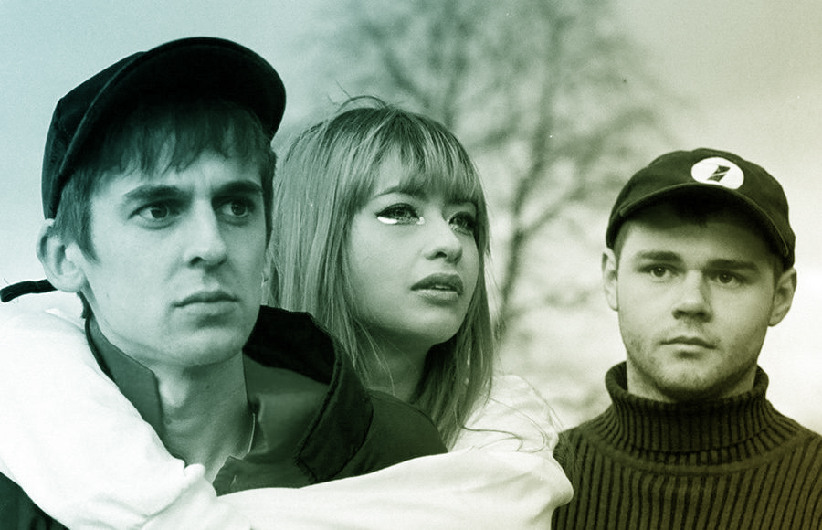

Kero Kero Bonito
Kero Kero Bonito c’est une pluie de paillettes pleine de couleurs et d’insouciance pour une musique aux antipodes de l’ennui. Entre pop japonaise et musique électronique, le leitmotiv de ce trio anglais est simple : have fun ! Guitares distordues, synthés analogiques, batteries organiques et chant tantôt en japonais tantôt en anglais sont ici au service de morceaux que l’on pourrait croire tout droit sortis d’un générique de manga. Pêchus, électrisants et déjantés, les morceaux du groupe nous vont droit au coeur !


Samedi 22 Juin 2021